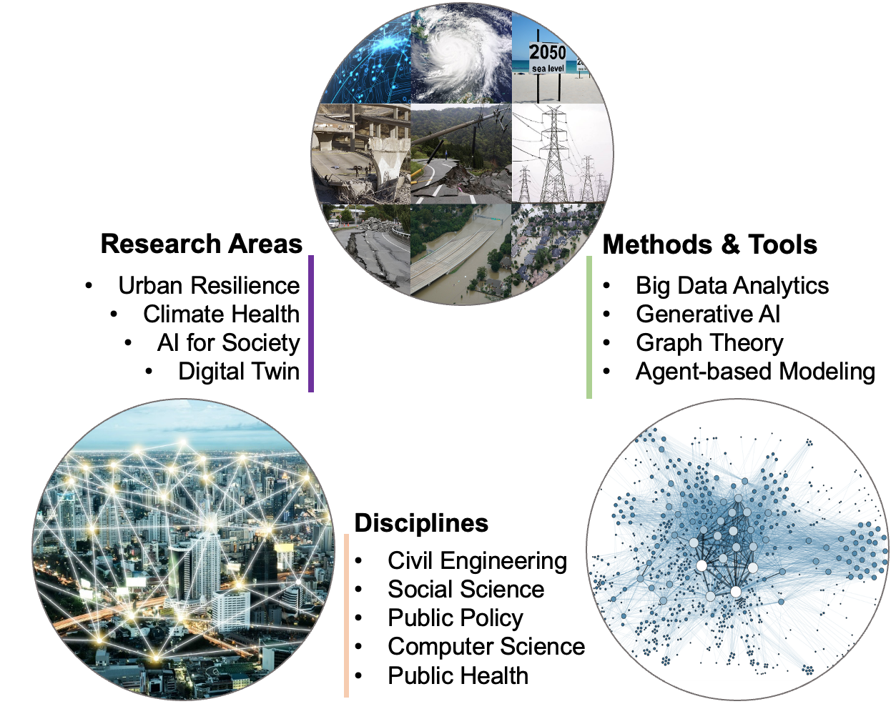

People build and maintain infrastructure systems, and depend on them to reach work, school, and care. Those systems matter only insofar as they meet those needs. Together they form a coupled system. Disasters are what happen when a hazard breaks that coupling, and the break is never only physical.
We study this human–disaster–built environment nexus. The work spans climate change adaptation, critical infrastructure protection, smart city, and urban resilience. We build computational models that represent people and infrastructure as one connected system, to trace a hazard from the first surge or outage into the daily lives it disrupts. We ask which services fail and in what order, who bears the brunt and why, how they adapt, and which decisions made today would most change that answer. Three things must converge. The problems must matter to communities under pressure. The methods and data must represent people and infrastructure as an interdependent system, from generative AI and network science to agent-based simulation. And the work must sustain collaboration across the disciplines these questions span. Our research lives at that intersection.

We appreciate the support from our sponsors.